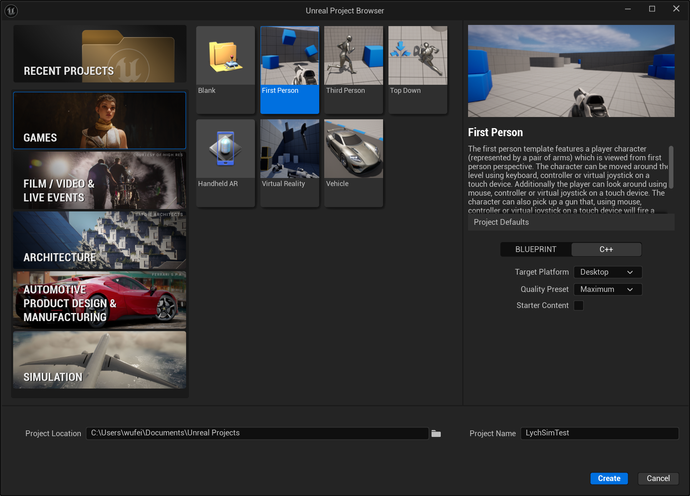
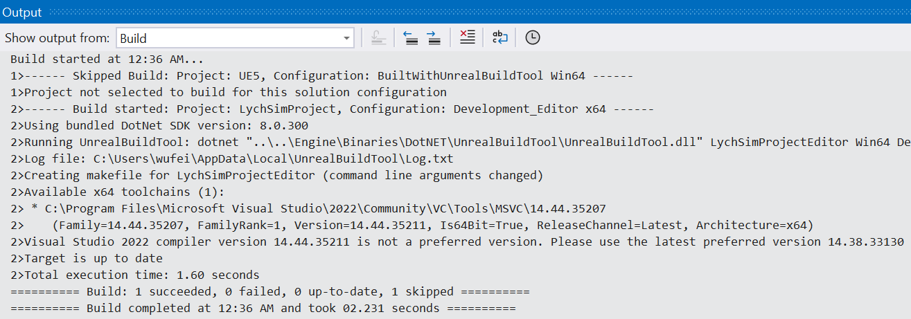
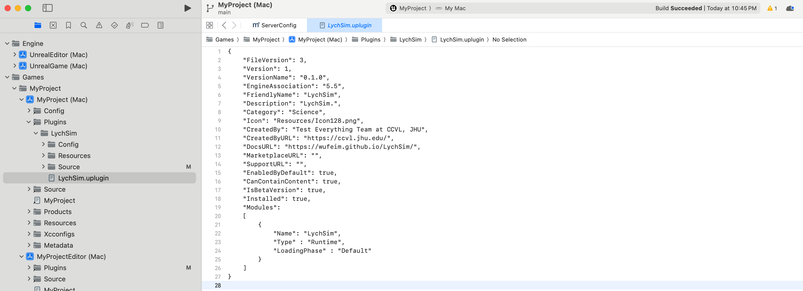
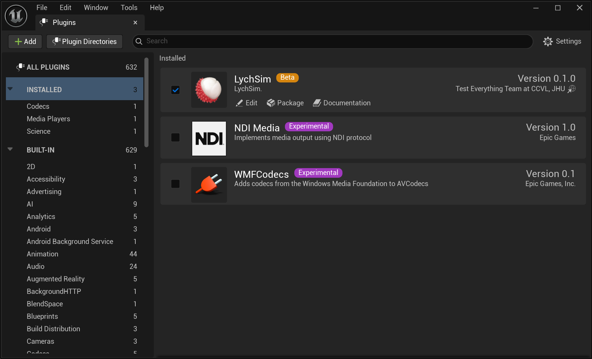
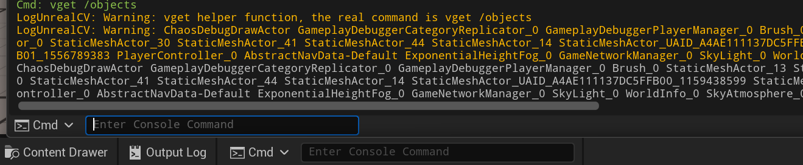

Installation#
Install UE5#
Install Unreal Engine 5 from Unreal Engine website.
Current LychSim plugin is only tested with Unreal Engine 5.5.4 on Windows and macOS.
Install and Compile LychSim Plugin#
Create a new Unreal Engine project.
Create a new project using the “Games - First Person” template.

Add LychSim plugin source code to the Unreal project.
First create the Plugins directory in your Unreal project folder.
For windows users, link the code with the following command (in cmd with administrator privileges):
mklink /J ^ "C:\Users\username\Documents\Unreal Projects\LychSimTest\Plugins\LychSim" ^ "C:\Users\username\Documents\LychSim\ue_plugin\LychSim"
For macOS users, use the following command (in Terminal):
ln -s /Users/username/Documents/LychSim/ue_plugin/LychSim \ /Users/username/Documents/Unreal\ Projects/LychSimTest/Plugins/LychSim
Re-generate project files. This helps Unreal Engine and Visual Studio recognize the new plugin.
Option 1: Right-click on the .uproject file of your Unreal project and select “Generate Visual Studio project files”.
Option 2.a: For Windows users, open a command prompt and navigate to the Unreal Engine installation directory, then run the following command:
"C:\Program Files\Epic Games\UE_5.5\Engine\Binaries\DotNET\UnrealBuildTool\UnrealBuildTool.exe" ^ -projectfiles -project="C:\Users\username\Documents\Unreal Projects\LychSimTest\LychSimTest.uproject" ^ -game -engine
Option 2.b: For macOS users, use the following command in Terminal:
/Users/Shared/Epic\ Games/UE_5.5/Engine/Build/BatchFiles/Mac/GenerateProjectFiles.sh \ -project="/Users/username/Documents/Unreal Projects/LychSimTest/LychSimTest.uproject"
(Windows users only) Compile the plugin in Visual Studio.
Open the generated .sln file in Visual Studio.
Click on “Build” in the top menu, then select “Build Solution”.

(macOS users only) Compile the plugin in Xcode.
Open the generated .xcworkspace file in Xcode.
Click on “Product” in the top menu, then select “Build”.

Enable the LychSim plugin in Unreal Engine.
Open your Unreal Engine project.
Go to “Edit” > “Plugins”.
Find the LychSim plugin in the list and enable it.
Restart Unreal Engine if prompted.

Verify the installation.
Start the Unreal Engine project by clicking the “Play” button.
From the Unreal Engine built-in Cmd, run the following command:
vget /object.

Install LychSim Python Package#
From the root directory of the repository, run:
pip install -e .